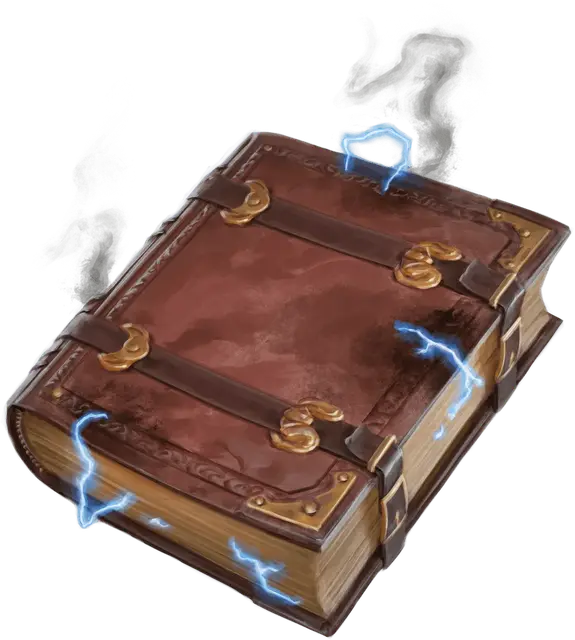

Гремящий трактат
Fulminating Treatise
Чудесный предмет, редкий (требуется настройка волшебником)

Рекомендованная стоимость 501-5 000 зм
Эта толстая обожжённая книга заклинаний пахнет дымом и озоном, а по краям её страниц потрескивают искры энергии. Найденная книга содержит следующие заклинания: волна грома [thunderwave], волшебная стрела [magic missile], Леомундова хижина [Leomund’s tiny hut], огненный шар [fireball], порыв ветра [gust of wind], предосторожность [contingency] и силовая стена [wall of force]. Эта книга функционирует для вас как книга заклинаний.
Когда вы держите книгу, вы можете использовать её в качестве заклинательной фокусировки для ваших заклинаний волшебника.
Книга имеет 3 заряда и ежедневно восстанавливает 1к3 заряда на рассвете. Вы можете использовать заряды следующими способами, пока держите книгу:
- Если вы потратите 1 минуту на изучение книги, вы можете израсходовать 1 заряд и заменить одно из своих подготовленных заклинаний волшебника на другое заклинание из книги. Новое заклинание должно принадлежать школе Воплощения.
- Когда одно существо, которое вы можете видеть, получает урон от наложенного вами заклинания школы Воплощения, вы можете реакцией потратить 1 заряд, чтобы нанести дополнительно 2к6 урона силовым полем этому существу и сбить его с ног, если оно Большое или меньше.